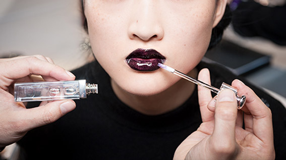
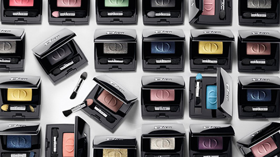
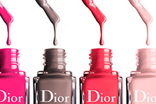
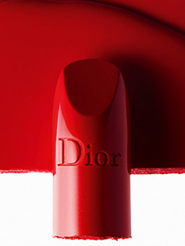

Макияж Dior makeup, Ода творению и цвету
Зачем лишать женщину привелегии и обаяния цвета?
Эта цитата Кристиана Диора вдохновляет на создание каждого творения Парфюмерного Дома, ведь
именно
цвет является творческим двигателем создания макияжных коллекций Dior.
Рожденная за кулисами: Про-Экспертиза макияжа
От одного модного показа к другому, мода и красота сплетаются в одно целое благодаря макияжным образам, которые Питер Филипс создает отдельно для каждого показа. Процесс преображения модерей в руках экспертных визажистов Dior выглядит как немой диалог между макияжем и модой.
От одного модного показа к другому, мода и красота сплетаются в одно целое благодаря макияжным образам, которые Питер Филипс создает отдельно для каждого показа. Процесс преображения модерей в руках экспертных визажистов Dior выглядит как немой диалог между макияжем и модой.
Цвет - сердце макияжа Dior
Макияж Dior вдохновляется любовью к цвету. Неожиданные оттенки перекликаются с кутюрными творениями Модного Дома. Любимые цвета Кристиана Диора и по сей день хранятся в сердце его творений по адресу Авеню Монтэнь, 30. Каждый сезон Питер Филипс преображает их, создавая новые макияжные коллекции.
 Макияж Dior вдохновляется любовью к цвету. Неожиданные оттенки перекликаются с кутюрными творениями Модного Дома. Любимые цвета Кристиана Диора и по сей день хранятся в сердце его творений по адресу Авеню Монтэнь, 30. Каждый сезон Питер Филипс преображает их, создавая новые макияжные коллекции.
